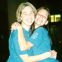
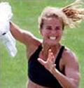
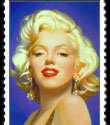
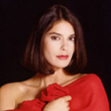
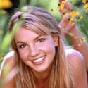
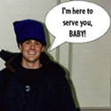

|
1999-2000 Directors,
et al!
|
|
Rishi
Moudgil, Executive
Director There are three qualities that a person must possess in order to lead such a great organization: dedication, personality, and overall "skillz." Rishi is lucky to be surrounded by people who are glowing with these attributes. He hopes and works for the best out of everyone! When I grow
up I want to be - A
pen pal |
|
Lee
Ann Benkert, Associate
Director - Letter Exchange The best advice Lee Ann ever heard was "be honest, work hard, and wear a smile; the rest will follow." She faces each new day with this mentality, propelled by the notion that things will work themselves out; you've just got to keep on smilin! :) When I grow
up I want to be - A
children's book author |
(Lee is on the left) |
|
|
Neha
Shah, Elementary School Director Neha is an outgoing college girl who talks alot. She's generally happy unless you make fun of her hright, and at any given time she's probably singing and/or dancing. When I grow
up I want to be - Tall |
|
Cathy
Keinath, Project Director
& BookMARK Chair Cathy is a quiet, hard-working college student. She loves working with community service projects and life consuming projects. :) Cathy is pretty active, enjoys the outdoors and good friends. When I grow
up I want to be - Working
outdoors happy and carefree |

(Cathy is on the right) |
|
Elena
Marin, Associate
Director - Internal Planning, Database Manager After Elena actually wakes up, she loves to just smile at life. Elena loves to try new and exciting, even crazy things, but most of all she loves to just be around great people. When I grow
up I want to be - An
engineer designing really cool stuff |
|
Sara
Wilson, Associate Director - Kids-Fair Sara is friendly and dependable. She cares about others and helps to serve those who are in need of assistance. She is devoted to the activities that she is involved and the issues that she cares about. When I grow
up I want to be - Anything
that makes me happy |
|
|
Kady
Davenport, Group Activities Director Kady is a happy girl! She is friendly, talkative, and would do anything for a friend. She always has a smile to offer others. When I grow
up I want to be - Either
a talent agent or casting director, and when I retire I want to open
a flower shop |
|
Sabrina
Haurin, Administrative
Manager Sabrina is rather small. But she doesn't mind that at all. She would much rather be short than absurdly tall. When I grow
up I want to be - International
Lawyer |
|

|
Liz
Mauck, Newsletter
Editor She wants to make a difference in the world on a lot of different levels. Anything she says or believes in must be the 100% truth. She is always trying to be a better person all around. When I grow
up I want to be - A
lawyer...maybe |
|
Heather
Munsche, Membership Services Coordinator, Box Tops Chair When I grow
up I want to be - a
pediatrician |

|
|
|
Selena
G. Shah, Finance Manager She is a friendly person who talks really fast. She loves listening to music and working with children. If finance doesn't work out, she would love to sing professionally. When I grow
up I want to be - CEO
of Sony Music |
|
Ani
Shehigian, Circle
K Chair on K-grams When I grow
up I want to be - A
criminal defense attorney |

|
|

|
Julie
Staples, External Relations Coordinator Julie is a bright person (in more ways than one) who loves people and dancing. She loves K-grams because she can swing and make others smile! :) When I grow
up I want to be - a
clinical or social psychologist |
|
Steve
Yeager, International Chair Steve likes to work hard. He also likes to have a lot of fun. Lastly, he believes that laughter is perhaps the best part of life. When I grow
up I want to be - Enthusiastic,
content and motivated |

|
Comments about this webpage can
be directed to smileweb@umich.edu
All other comments or questions can be sent to smile@umich.edu